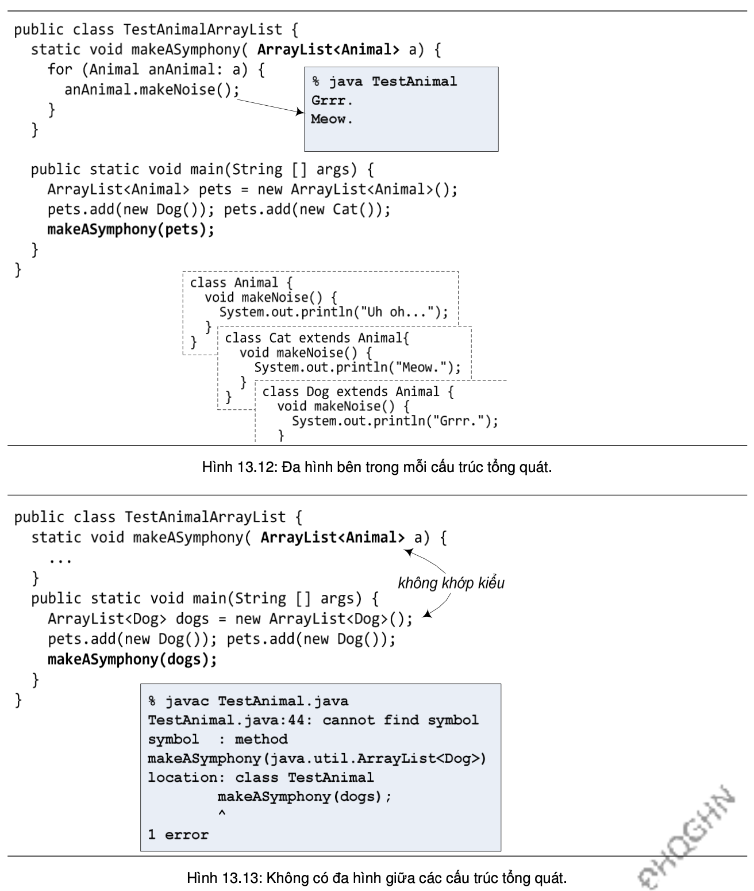
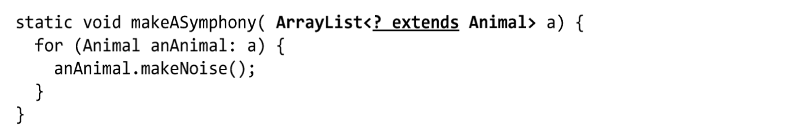

Quan hệ thừa kế giữa hai lớp không có ảnh hưởng gì đến quan hệ giữa các cấu trúc tổng quát dùng cho hai lớp đó. Chẳng hạn, Dog và Cat là các lớp con của Animal, ta có thể đưa các đối tượng Dog và Cat vào một ArrayList<Animal>, và tính chất đa hình giữa Dog, Cat, và Animal vẫn hoạt động như bình thường (xem ví dụ trong Hình 13.12). Tuy nhiên, ArrayList<Dog>, ArrayList<Cat> lại không có quan hệ gì với ArrayList<Animal>. Vậy cho nên, nếu dùng một ArrayList<Dog> làm đối số cho phương thức yêu cầu đối số kiểu ArrayList<Animal>, như ví dụ trong Hình 13.13, trình biên dịch sẽ báo lỗi sai kiểu dữ liệu.
Tóm lại, nếu ta khai báo một phương thức lấy đối số kiểu ArrayList<Animal>, nó sẽ chỉ có thể lấy đối số kiểu ArrayList<Animal> chứ không thể lấy kiểu ArrayList<Dog> hay ArrayList<Cat>.
Vậy làm thế nào để làm cho một phương thức có thể nhận đối số thuộc kiểu ArrayList<Dog>, ArrayList<Cat>,...nghĩa là ArrayList dành cho kiểu bất kì là lớp con của Animal? Giải pháp là sử dụng kí tự đại diện (wildcard).
? extends Animal có nghĩa là kiểu gì đó thuộc loại Animal. Nhớ rằng từ khóa extends ở đây có nghĩa "là lớp con của" hoặc "cài đặt", tùy vào việc theo sau từ khóa extends là tên một lớp hay tên một interface.
Khi ta dùng kí tự đại diện <?> tại khai báo, trình biên dịch sẽ không cho ta thêm cái gì vào trong danh sách mà tham số của phương thức chiếu tới. Ta có thể gọi phương thức của các phần tử trong danh sách, nhưng ta không thể thêm phần tử mới vào danh sách. Do đó, ta có thể yên tâm khi chương trình chạy. Ví dụ, makeASymphony() với nội dung ở trên thì không gặp lỗi biên dịch, nhưng takeAnimals() với nội dung như trong Hình 13.14 sẽ không biên dịch được.
Hai cú pháp sau là tương đương:
public void foo( ArrayList<? extends Animal> a)
public <T extends Animal> void foo( ArrayList<T> a)
Cách thứ hai, dùng "T", thường được sử dụng khi ta còn muốn T xuất hiện ở các vị trí khác. Ví dụ, cách viết sau quá dài:
public void bar( ArrayList<? extends Animal> a1, ArrayList<? extends Animal> a2)
thay vào đó, ta viết:
public <T extends Animal> void bar(ArrayList<T> a1 , ArrayList<T> a2)